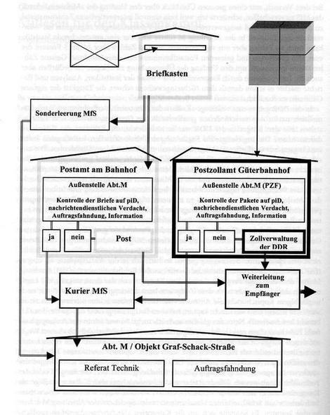

Umgang mit dem Postgeheimnis
Zuständig für die „Postkontrolle“ im MfS war die sogenannte Abteilung M, deren Entstehung auf das Jahr 1951 zurückgeht. 1989 waren dort ca. 2.200 Mitarbeiter beschäftigt.
So wurde dabei vorgegangen:
Aufgrund der Adresse oder äußerer Merkmale wurden verdächtige Briefe mit speziellen Geräten, mit heißem oder kaltem Wasserdampf geöffnet, kopiert und dann wieder dem Postkreislauf zugeführt. In gesonderten Fällen kamen aber auch chemische Lösungsmittel, Ultraschallbäder oder Bügeleisen zum Einsatz. Sollten Kontakte z. B. zwischen Republikflüchtlingen und DDR-Bürgern verhindert werden, wurden Briefe auch gezielt einbehalten.
Für die Selektion der Postsendungen benutzte die Abteilung M ein Fahndungsraster. So wurden Briefe in drei Kategorien klassifiziert:
1. nachrichtendienstlich verdächtige Sendungen
2. Sendungen mit Verdacht auf piD (politisch-ideologische Diversion)
3. Sendungen, die durch äußere Merkmale auf einen operativ interessanten Inhalt aufmerksam machten
Neben der Absicht des MfS, politisch-feindliche Tätigkeiten zu verhindern und zu unterdrücken, stellte sich die Abteilung M „Postkontrolle“ als eine profitable Devisenquelle heraus. Wenn es Geld oder wertvolle Objekte in den Briefen bzw. Paketen gab, wurden diese systematisch entwendet. Zwischen 1984 und 1989 wurden auf diese Weise ca. 32 Mio. DM gestohlen.
Als Beispiel ist im folgenden ein Ablaufschema der Post- und Paketkontrolle durch das MfS in der Bezirksverwaltung Rostock dargestellt:
So wurde dabei vorgegangen:
Aufgrund der Adresse oder äußerer Merkmale wurden verdächtige Briefe mit speziellen Geräten, mit heißem oder kaltem Wasserdampf geöffnet, kopiert und dann wieder dem Postkreislauf zugeführt. In gesonderten Fällen kamen aber auch chemische Lösungsmittel, Ultraschallbäder oder Bügeleisen zum Einsatz. Sollten Kontakte z. B. zwischen Republikflüchtlingen und DDR-Bürgern verhindert werden, wurden Briefe auch gezielt einbehalten.
Für die Selektion der Postsendungen benutzte die Abteilung M ein Fahndungsraster. So wurden Briefe in drei Kategorien klassifiziert:
1. nachrichtendienstlich verdächtige Sendungen
2. Sendungen mit Verdacht auf piD (politisch-ideologische Diversion)
3. Sendungen, die durch äußere Merkmale auf einen operativ interessanten Inhalt aufmerksam machten
Neben der Absicht des MfS, politisch-feindliche Tätigkeiten zu verhindern und zu unterdrücken, stellte sich die Abteilung M „Postkontrolle“ als eine profitable Devisenquelle heraus. Wenn es Geld oder wertvolle Objekte in den Briefen bzw. Paketen gab, wurden diese systematisch entwendet. Zwischen 1984 und 1989 wurden auf diese Weise ca. 32 Mio. DM gestohlen.
Als Beispiel ist im folgenden ein Ablaufschema der Post- und Paketkontrolle durch das MfS in der Bezirksverwaltung Rostock dargestellt:

(Quelle: "Mitlesen für den Klassenkampf" von Gerd Reinicke, In: Heimliche Leser in der DDR, Ch. Links Verlag, Berlin 2008)
Jürgen Fuchs: Vernehmungsprotokolle*
24.11.
I: Nun, wie steht es?
Ich möchte Ihnen nur drei Punkte zu Protokoll geben: 1. ich protestiere gegen meine Inhaftierung 2. Ich fordere meine sofortige Freilassung 3. Ich lehne jedes weitere Gespräch mit Ihnen ab.
I notiert, was ich sage.
I: Das ist eine sture Haltung. Das ist ganz und gar nicht der konstruktive Dialog, den ich mir vorgestellt habe.
Ich schweige, sehe aus dem Fenster, notiere einiges auf die Tischplatte.
I: Herr Fuchs, Sie haben eine Schwester, nicht wahr? Die wohnt in Saalfeld und hat drei Kinder, ist das richtig? Sie ist Lehrerin. In welchem Verhältnis stehen Die zu ihr, ist es gut, ist es schlecht?
Meine Schwester / was sollen diese Fragen / sie werden doch nicht etwa / das ist doch ganz unmöglich / was ist unmöglich?
I: Sie haben ein gutes Verhältnis zu ihr, wir wissen das. Sie haben sie öfteres besucht, ihr neue Arbeiten gezeigt, mit ihr diskutiert. Sie hat gewisse strafbare Handlungen offensichtlich geduldet, ohne Anzeige zu erstatten. Wissen Sie, was das heißt. ich meine, für sie?
Sie suchen nach deinen Schwachpunkten. Und Schwachpunkte sind die Menschen, die du liebst. Sie wollen dich verletzen, zu `Reaktionen zwingen, Panik und Angst erzeugen. Das, was sie dir sagen, sind Andeutungen. Du sollst weiterdenken und weiterfühlen. Informationssperre, -auswahl, -verzerrung, Falschinformationen, Teilwahrheiten und Wahrheiten, die dir unangenehm sind, werden ausgewählt. Was ist wie und wo einzuordnen? Die Beantwortung dieser hochbedeutsamen Fragen wird um so schwieriger, je länger du in Haft bist, je mehr "Aßen-Film" fehlt. Das wissen sie. Damit rechnen sie. Danach handeln sie. Gezielt, kundig, ohne moralische Schranken. Du bist ein "Feind". Der Einsatz vielfältiger Mittel ist erlaubt, wenn nur der "Sieg" errungen wird. Un ihr "Sieg" ist deine Niederlage, dein Zusammenbruch, deine Unterwerfung, die sie "Einsicht" nennen oder "Mitarbeit im Verfahren".
(* Jürgen Fuchs: Verneh-mungsprotokolle Nov.´76 bis Sept.´77;
Rowohlt, Reinbeck 1978)
I: Nun, wie steht es?
Ich möchte Ihnen nur drei Punkte zu Protokoll geben: 1. ich protestiere gegen meine Inhaftierung 2. Ich fordere meine sofortige Freilassung 3. Ich lehne jedes weitere Gespräch mit Ihnen ab.
I notiert, was ich sage.
I: Das ist eine sture Haltung. Das ist ganz und gar nicht der konstruktive Dialog, den ich mir vorgestellt habe.
Ich schweige, sehe aus dem Fenster, notiere einiges auf die Tischplatte.
I: Herr Fuchs, Sie haben eine Schwester, nicht wahr? Die wohnt in Saalfeld und hat drei Kinder, ist das richtig? Sie ist Lehrerin. In welchem Verhältnis stehen Die zu ihr, ist es gut, ist es schlecht?
Meine Schwester / was sollen diese Fragen / sie werden doch nicht etwa / das ist doch ganz unmöglich / was ist unmöglich?
I: Sie haben ein gutes Verhältnis zu ihr, wir wissen das. Sie haben sie öfteres besucht, ihr neue Arbeiten gezeigt, mit ihr diskutiert. Sie hat gewisse strafbare Handlungen offensichtlich geduldet, ohne Anzeige zu erstatten. Wissen Sie, was das heißt. ich meine, für sie?
Sie suchen nach deinen Schwachpunkten. Und Schwachpunkte sind die Menschen, die du liebst. Sie wollen dich verletzen, zu `Reaktionen zwingen, Panik und Angst erzeugen. Das, was sie dir sagen, sind Andeutungen. Du sollst weiterdenken und weiterfühlen. Informationssperre, -auswahl, -verzerrung, Falschinformationen, Teilwahrheiten und Wahrheiten, die dir unangenehm sind, werden ausgewählt. Was ist wie und wo einzuordnen? Die Beantwortung dieser hochbedeutsamen Fragen wird um so schwieriger, je länger du in Haft bist, je mehr "Aßen-Film" fehlt. Das wissen sie. Damit rechnen sie. Danach handeln sie. Gezielt, kundig, ohne moralische Schranken. Du bist ein "Feind". Der Einsatz vielfältiger Mittel ist erlaubt, wenn nur der "Sieg" errungen wird. Un ihr "Sieg" ist deine Niederlage, dein Zusammenbruch, deine Unterwerfung, die sie "Einsicht" nennen oder "Mitarbeit im Verfahren".
(* Jürgen Fuchs: Verneh-mungsprotokolle Nov.´76 bis Sept.´77;
Rowohlt, Reinbeck 1978)